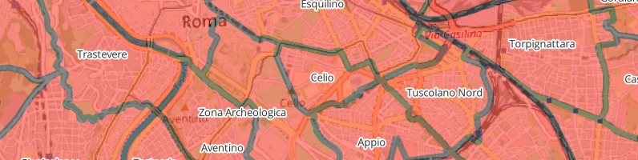
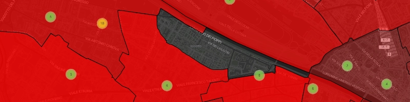

L’idea di utilizzare i dati elettorali per analizzare i processi di segregazione all’interno delle città italiane ci è nata leggendo il lavoro di Gabriele Pinto pubblicato nel 2023 con il titolo “Sezioni Elettorali Italiane (SEI): a new database of Italian electoral results geocoded at precinct level” che raccoglie i dati delle elezioni degli ultimi anni a livello di singole sezioni.
L’aspetto che ci ha colpito di questa enorme raccolta di dati è stata la possibilità di poter guardare da vicino cosa avviene nei singoli quartieri e da lì è sorta la voglia di capire meglio come funzionano le nostre città.
Dati Elettorali
Sul portale Eligendo del Ministero dell’Interno sono riportati i dati relativi ai voti di tutte le elezioni svoltesi in Italia dall’Assemblea Costituente ai giorni nostri. Il limite di tali dati per il nostro lavoro è che i risultati qui sono aggregati per Comune.
Scraping dati mancanti
Una volta scelto di concentrarci sui voti alla Camera, per preservare omogeneità dei dati tra città diverse, abbiamo fatto scraping dei dati che ci mancavano direttamente dal sito delle amministrazioni comunali.
Partiti che vanno, partiti che vengono
Appena abbiamo cominciato a mettere insieme dati di città diverse ci siamo accorti che i nomi dei partiti erano di volta in volta riportati in maniera diversa. Il primo step è stato quindi di armonizzare introducendo un codice che identificasse in maniera univoca ogni partito.
Il codice identificativo dei partiti è stato mantenuto da un anno all’altro per quei partiti che nel corso del tempo hanno modificato il nome ma mantenuto la struttura (e qui Wikipedia è stata d’aiuto per ricostruire la storia di scissioni e unioni, e fissare l’area di appartenenza politica). Nei casi in cui un partito fosse nato dall’unione di più di un altro partito, invece, abbiamo creato un nuovo codice.
A questo punto abbiamo raggruppato i partiti per corrente politica. Come nel paper di riferimento, alcune entità politiche spiccatamente apartitiche non sono state assegnate a nessuna corrente e anche per la loro scarsa rilevanza in termini di voti non hanno fatto parte dell’analisi.
Sezioni che si muovono
I dati raccolti fino a questo punto riportano il numero della sezione, ma non il nome dell’istituto scolastico in cui è ubicata né tantomeno l’indirizzo. E da qui la domanda: “Ma la sezione X del 2013 è nella stessa posizione nel 2022?” A quanto pare la risposta non è così banale, perché’ abbiamo riscontrato diversi cambi di indirizzi delle sezioni nel corso degli anni. Qui c’è da dire che la documentazione trovata è frammentata e riportata nei formati più disparati. Alcuni comuni hanno adottano il sistema OpenData da qualche anno, altri affidano a file Pdf o Doc le loro informazioni. Sulla base di quanto trovato abbiamo ricostruito una mappa dei cambi di location dei seggi. Eravamo ormai vicini a fissarne la posizione nello spazio, quasi.
Coordinate
Anche in questo caso c’è stato bisogno di armonizzare gli indirizzi e far sì che tutti i “V.le” diventassero “Viale” e “A. Manzoni”, “Alessandro Manzoni”. A tutti gli indirizzi è stato aggiunto il Cap e il nome della città. Questo è stato importante per lo step successivo, il geocoding.
Qui non è stato necessario fare scraping, perché il sito Nominatim mette a disposizione un Api con la sola limitazione di una chiamata al secondo. Le appena acquisite coordinate Gps, insieme all’anno in cui quella sezione era presente e quell’indirizzo hanno popolato un nuovo dataset. Manualmente sono stati aggiunti tramite Google Maps quegli indirizzi che Nominatim non era riuscita a identificare, era arrivato il momento di testare i risultati.
Aree Sub Comunali

L’Istat fornisce i dati geografici delle partizioni del territorio italiano e in particolare le Aree sub comunali (Asc2) delle principali città. Poste a metà tra i Cap e le aree di censimento, le Asc2 forniscono una suddivisione fissata nel tempo del territorio comunale in quartieri a un livello di dettaglio idoneo al nostro studio.Una volta scaricati gli shapefile delle aree, tramite geopandas abbiamo associato le coordinate delle sezioni elettorali alle rispettive aree nel cui perimetro sono localizzate.
Indici
Gini
Nella ricerca di un indice capace di descrivere la disuguaglianza dei valori dei risultati elettorali la prima scelta è stata di usare l’indice di Gini, metrica largamente utilizzata in letteratura.
Ne abbiamo creato due versioni, una che descrive la disuguaglianza dei voti del quartiere e una a livello cittadino di tutti i quartieri in una determinata elezione. Entrambe partono dalla definizione dell’indice che segue:
\[G = \frac{\sum_{i=1}^{n}\sum_{j=1}^{n} |x_i - x_j|}{2n\sum_{i=1}^{n} x_i}\]Per far fronte al cambio di numero di correnti politiche (comparsa del Movimento 5 Stelle nel 2018) abbiamo preferito creare una versione normalizzata per facilitare il confronto dei risultati:
\[G^*_{a,t} = \frac{ \sum_{i=1}^{n_t}\sum_{j=1}^{n_t} |x_{i,a,t} - x_{j,a,t}| }{ 2n_t \sum_{i=1}^{n_t} x_{i,a,t} } \cdot \frac{n_t}{n_t - 1}\]dove:
- $a$ zona ASC2
- $t$ anno elezioni
- $x_i$ numero di voti ricevuti dalla corrente $i$
- $n_t$ numero di correnti politiche attive nell’anno $t$
| Gini | Interpretazione |
|---|---|
| 0 | Voti perfettamente bilanciati tra le correnti |
| 1 | Una corrente prende tutti i voti |
I di Moran globale
Se l’indice di Gini ci dice se i risultati elettorali in un quartiere sono politicamente concentrati o frammentati, non ci dice nulla sul fatto che quartieri simili sono spazialmente vicini l’uno l’altro.
Per quantificare la presenza di cluster all’interno del territorio comunale, abbiamo calcolato l’indice di Moran, misura di autocorrelazione spaziale che restituisce un valore positivo se valori simili sono localizzati spazialmente. Al contrario, una autocorrelazione spaziale negativa indica una prossimità spaziale di valori dissimili.
La formula è:
\[I_{c,t} = \frac{n_{c,t}}{S_{0,c,t}} \frac{ \sum_{i=1}^{n_{c,t}} \sum_{j=1}^{n_{c,t}} w_{ij,c,t} (x_{i,c,t} - \bar{x}_{c,t}) (x_{j,c,t} - \bar{x}_{c,t}) }{ \sum_{i=1}^{n_{c,t}} (x_{i,c,t} - \bar{x}_{c,t})^2 }\]dove:
- $c$ città
- $t$ anno
- $x_{i,c,t}$ è il valore della variabile $i$, città $c$, anno $t$, (es.
pol_gini,winner_share, ecc.) - $\bar{x}_{c,t}$ è la media di quella variabile nella città $c$ e anno $t$
- $w_{ij,c,t}$ è il peso spaziale tra area $i$ e area $j$ nella città $c$ e anno $t$
- $S_{0,c,t}$ = $\sum_i$ $\sum_j$ $w_{ij,c,t}$
- $n_{c,t}$ è il numero di aree nella città $c$ e anno $t$
| Moran’s I | Interpretazione |
|---|---|
| Positivo | Aree simili sono spazialmente clusterizzate |
| Intorno allo 0 | Nessun pattern spaziale chiaro |
| Negativo | Aree confinanti sono dissimili |
| p-value significativo | Il pattern è improbabile essere random |

I pesi spaziali $w_{ij,c,t}$ definiscono chi è considerato un vicino rispetto a ogni città e anno. Utilizzando l’analogia degli scacchi, i vicini possono essere tali se condividono tra loro spigoli, come lo spazio di manovra della torre, oppure spigoli e vertici come fa la regina. Tali metodi sono implementati nella libreria libpysal che offre strumenti per l’analisi spaziale.
Dopo aver provato entrambi i metodi, ci siamo resi conto della presenza di isole vuote dentro le mostre città, una rapida analisi ci ha fatto capire che ciò era dovuto al fatto che in alcuni quartieri non ci sono sezioni elettorali, quindi quei quartieri non hanno dati. Per questo motivo abbiamo deciso di utilizzare KNN come metodo di calcolo dei vicini, in modo da riuscire sempre a individuare un quartiere nelle vicinanze anche se non confinante.
I di Moran locale
Se l’indice di Moran globale risponde alla domanda se esistono dei cluster di valori tra loro limitrofi, l’indice locale di dice in quali quartieri ciò accade.
Per un’area (a), nella città (c), nell’anno (t), la formula è:
\[I_{a,c,t} = \frac{x_{a,c,t} - \bar{x}_{c,t}}{m_{2,c,t}} \sum_{b=1}^{n_{c,t}} w_{ab,c,t} \left(x_{b,c,t} - \bar{x}_{c,t}\right)\]con:
\[m_{2,c,t} = \frac{1}{n_{c,t}} \sum_{k=1}^{n_{c,t}} \left(x_{k,c,t} - \bar{x}_{c,t}\right)^2\]dove:
- $a$ area ASC2
- $b$ indicizza le aree limitrofe
- $k$ indicizza ogni area nella stessa città-anno, usato per calcolare la varianza città-anno
- $c$ città
- $t$ anno
- $x_{a,c,t}$ valore della variabile nell’area $a$, città $c$, anno $t$, es.
pol_gini - $\bar{x}_{c,t}$ valore medio di quella variabile nella città $c$ e anno $t$
- $w_{ab,c,t}$ peso spaziale tra l’area $a$ e l’area $b$, nella stessa città-anno
- $n_{c,t}$ numero di aree nella città $c$ e anno $t$
- $m_{2,c,t}$ scaling term della varianza città-anno
Dopo aver calcolato l’indice di Moran locale, ogni quartiere è stato classificato tramite Lisa (Local Indicators of Spatial Association) cluster. La classificazione è basata su due elementi:
-
se il valore del quartiere è sopra o sotto la media della città-anno
-
se i valori dei vicini sono sopra o sotto la media della città-anno
Per esempio per la variabile pol_gini, i risultati indicano:
| Lisa cluster | Interpretazione |
|---|---|
| High-High | alta concentrazione politica circondata da alta concentrazione politica |
| Low-Low | bassa concentrazione politica circondata da bassa concentrazione politica |
| High-Low | alta concentrazione politica circondata da bassa concentrazione politica |
| Low-High | bassa concentrazione politica circondata da alta concentrazione politica |
| Not significant | cluster locale non statisticamente significativo |
80/20 Percentile
Il rapporto dei percentili 80/20 misura la distanza tra la parte alta e bassa della distribuzione, suggerendo che una maggiore distanza tra i due estremi indichi una maggiore polarizzazione.